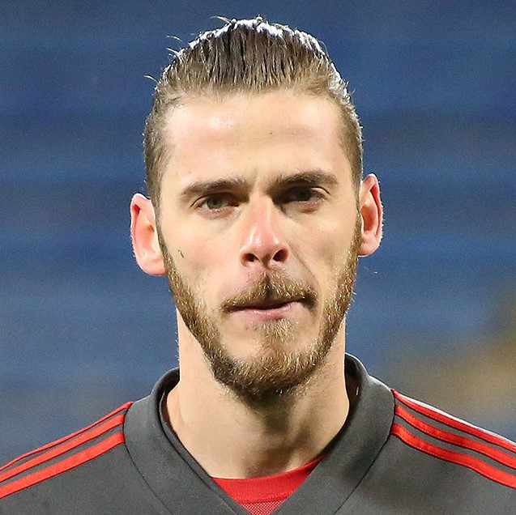
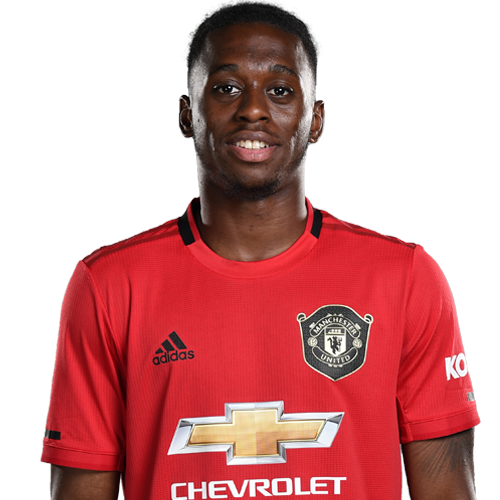
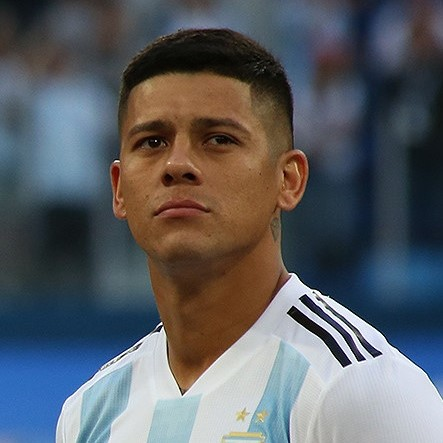
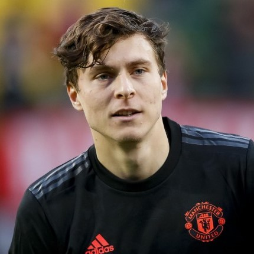

-
Manchester United
-

- About
- Registration
- Products
- Introduction
Contacts
 Name: Andrew Kane.
Name: Andrew Kane.
Job: Best Teacher ever.
Email: nhd36@drexel.edu.
Description: He is very responsive. He replied to Nam's email at midnight for deadline extension. He has been a great instructure throughtout the first term. Although we did not interact with him that much, we felt like he had been trying his best to create an opened environment for all the students to get involved in activities as well as lectures. We love him!
Name: Nam Dao.
Job: Student.
Email: nhd36@drexel.edu.
Description: Not smart, but diligent, still sometimes lazy. Nam has zero experience about coding when he entered Drexel. Yet after first term at Drexel, Nam still has zero advanced knowledge about coding. But he always tries his best to complete Prof Kane's work. Nam lacks of time for study. But when he has, he still doesn't. He will wait untill when the deadline is due, so he can finish the work in 2 hours. This website was made in 2 hours (joking).
Name: Vignesh Sadhasivan.
Job: Student.
Email: vs556@drexel.edu.
Description: Not smart, but diligent, still sometimes lazy. Nam has zero experience about coding when he entered Drexel. Yet after first term at Drexel, Nam still has zero advanced knowledge about coding. But he always tries his best to complete Prof Kane's work. Nam lacks of time for study. But when he has, he still doesn't. He will wait untill when the deadline is due, so he can finish the work in 2 hours. This website was made in 2 hours (joking).
Players

Name: De Gea.
Position: Goal Keeper.
Description: Born in Madrid, De Gea began his career aged 13 with Atlético Madrid and rose through the academy system at the club before making his senior debut in 2009. After being made Atlético's first-choice goalkeeper, he helped the team win both the UEFA Europa League and the UEFA Super Cup in 2010. His performances attracted the attention of Manchester United, which he joined in June 2011 for £18.9 million, a British record for a goalkeeper at the time.

Name: Aaron Wan-Bissaka.
Position: Right Back.
Description: a professional footballer who plays as a right-back for Premier League club Manchester United and the England under-21 national team. Wan-Bissaka began his career with Crystal Palace and was named as the club's Player of the Year for the 2018–19 season. In 2019, he moved to Manchester United for an initial fee of £45 million, with another £5 million due in potential bonuses. He is of Congolese descent and made one appearance for DR Congo U20s in 2015. He has gone on to represent the country of his birth, England, at under-20 and under-21 levels.
Name: Andreas Pereira.
Position: Mid-filder.
Description:a professional footballer who plays as a midfielder for English Premier League club Manchester United and the Brazil national team. Born in Duffel, Belgium, he began his youth career with nearby Lommel United. At the age of nine, he joined Dutch club PSV Eindhoven, before signing for Manchester United in November 2011. Pereira made his first Premier League appearance in March 2015. He has spent time on loan at Spanish clubs Granada and Valencia. He played international football for the youth teams of both the country of his birth, Belgium, and his father's homeland, Brazil, before making his senior debut for Brazil in September 2018.
Name: Angel Gomes.
Position: Attacking Mid-fielder.
Description: an English professional footballer who plays as an attacking midfielder for Premier League club Manchester United. Gomes is the youngest player to represent Manchester United since Duncan Edwards in 1953, as well as the first player born in the 2000s to appear in the Premier League. He has captained England at under-16, under-17 and under-18 levels.
Name: Anthony Martial.
Position: Forward.
Description: A French professional footballer who plays as a forward for Premier League club Manchester United and the France national team. He was the recipient of the 2015 Golden Boy Award for the best under-21 player in Europe. Playing youth football for Les Ulis, he began his professional career at Lyon, then transferred to AS Monaco in 2013 for a fee of €6 million. He was a member of Monaco's squad for two seasons, and signed for Manchester United in 2015 for an initial fee of £36 million which could potentially rise to £57.6 million. This was the highest fee paid for a teenager in football history even before the potential increase. He scored in his first match for United, and was named the Premier League Player of the Month in his first month in English football.
Name: Ashley Young.
Position: Winger/Fullback.
Description: an English professional footballer who plays as a winger or full back for Premier League club Manchester United, as their club captain, and the England national team. Born and raised in Hertfordshire, Young started his career at Watford, making his first senior appearances in 2003 under the management of Ray Lewington. He became a first-team regular in 2004–05, and was one of Watford's key players in their promotion winning 2005–06 season. Young continued to play well for Watford in the Premier League, and in January 2007 he transferred to Aston Villa for an £8 million fee, rising to £9.65 million with add-ons. He established himself in the first team at Villa Park and won the PFA Young Player of the Year award in 2009.
Name: Axel Tuanbeze.
Position: Fullback.
Description: Tuanzebe's preferred position is at centre-back, but he can also play as a right-back, and has featured as a holding midfielder. His playing style has been compared to that of teammate Eric Bailly and Bayern Munich's Javi Martínez. Tuanzebe's performance on his first-team debut in a friendly against Wigan Athletic in July 2016 led manager José Mourinho to remark, "10 minutes is enough! The potential is there, you see it immediately.
Name: Bradon Williams.
Position: Leftback.
Description: Williams made his first-team debut for Manchester United on 25 September 2019 in an EFL Cup match against Rochdale. He made his full debut on 3 October 2019 in the UEFA Europa League match against AZ Alkmaar. Williams signed a new long-term contract on 17 October 2019, keeping him at the club until June 2022. He made his Premier League debut on 20 October 2019 against Liverpool at Old Trafford as a late substitute. He was voted Man of the Match by the Manchester United fans. On 24 November, Williams scored his debut goal for Manchester United in a 3–3 draw with Sheffield United
Name: Daniel James.
Position: Winger.
Description: a professional footballer who plays as a winger for Premier League club Manchester United and the Wales national team. He made his professional debut for Swansea City in February 2018, and signed for Manchester United in June 2019. He made his senior Wales debut in November 2018, having previously represented the nation at various youth levels.
Name: Diogo Dalot.
Position: Fullback/Winger.
Description: Born in Braga, Dalot joined Porto's youth system in 2008, aged nine. On 28 January 2017, he made his senior debut with the B team, playing the full 90 minutes in a 2–1 home loss against Leixões S.C. for the LigaPro championship. Dalot first appeared with the first team in competitive games on 13 October 2017, starting in a 6–0 away win over Lusitano G.C. for the season's Taça de Portugal. He first played in the Primeira Liga on 18 February 2018, coming on as a 75th-minute substitute in a 5–0 home routing of Rio Ave FC. Dalot signed for Premier League club Manchester United on 6 June 2018 on a five-year contract for a fee of £19 million. He made his debut on 19 September 2018 in an away UEFA Champions League group stage match against Swiss side Young Boys
 Name: Eric Baily.
Name: Eric Baily.
Position: Central Defender.
Description: an Ivorian professional footballer who plays for English Premier League club Manchester United and the Ivory Coast national team. Mainly a central defender, he can also play as a right-back. Bailly began his professional career at Spain's Espanyol, before transferring to Villarreal. He spent two seasons at the club before signing for Manchester United in June 2016. He made his international debut for the Ivory Coast in 2015 and helped them win that year's Africa Cup of Nations.
 Name: Fred.
Name: Fred.
Position: Mid-fielder.
Description: a Brazilian professional footballer who plays as a midfielder for English Premier League club Manchester United and the Brazil national team. Fred started his career at Brazilian club Internacional, where he won the Campeonato Gaúcho twice. On 26 June 2013, he signed for Ukrainian club Shakhtar Donetsk, where he won 10 trophies, including four Ukrainian Premier League titles. In 2018, Fred signed for Manchester United. Fred was part of Brazil's squad for the 2015 Copa América in Chile, starting in their final two Group C matches as they reached the quarter-finals. He was named in Brazil's final 23-man squad for the 2018 FIFA World Cup.
Name: Harry Maguire.
Position: Centre-back.
Description: an English professional footballer who plays as a centre-back for Premier League club Manchester United and the England national team. Born in Sheffield, he came through the youth system at Sheffield United before graduating to the first team in 2011. He totalled 166 professional games for the Blades and was their Player of the Year three consecutive times, also featuring in the PFA Team of the Year for League One as many times. In 2014, he transferred to Hull City for £2.5 million, who loaned him to Wigan Athletic in 2015. He joined Leicester City in 2017 for an initial fee of £12 million. Two years later, he moved to Manchester United for a fee believed to be £80 million, a world-record fee for a defender. Maguire played one match for England under-21 in 2012. In October 2017, he made his senior debut, and he was chosen for the 2018 FIFA World Cup squad.
Name: Jesse Lingard.
Position: Attacking Mid-fielder/Winger.
Description: an English professional footballer who plays as an attacking midfielder or as a winger for Premier League club Manchester United and the England national team. Lingard made his senior debut while on loan at Leicester City in 2012, and spent time on loan at Birmingham City and Brighton & Hove Albion during the 2013–14 season and at Derby County in 2015. He represented England at under-17 and under-21 levels, before making his senior international debut in October 2016 and went to represent his country at the 2018 FIFA World Cup, a tournament where England reached the semi finals, finishing fourth.
Name: Juan Mata.
Position: Mid fielder.
Description: a Spanish professional footballer who plays as a midfielder for Premier League club Manchester United and the Spain national team. He mostly plays as a central attacking midfielder, but he can also play on the wing. A graduate of Real Madrid's youth academy, Mata played for Real Madrid Castilla in 2006–07, before joining Valencia in the summer of 2007. He became an integral part of the club's midfield, making 174 appearances over the course of four seasons. In August 2011, Mata signed for English club Chelsea of the Premier League for a fee believed to be in the region of €28 million, and in his debut season was part of the team that won the UEFA Champions League and the FA Cup.
 Name: Lee Grant.
Name: Lee Grant.
Position: Goal Keeper.
Description: an English professional footballer who plays as a goalkeeper for Premier League club Manchester United. Grant began his professional career with Derby County, making his Football League debut in September 2002. Grant spent five seasons with Derby, during which time he went out on loan to Burnley and Oldham Athletic. He joined Sheffield Wednesday in July 2007 and established himself as first choice goalkeeper, playing in 136 consecutive matches. He moved to Burnley in July 2010, where he made 126 appearances in three seasons, before returning to Derby County in May 2013. Grant joined Stoke City in August 2016, initially on loan, before a permanent transfer in January 2017. He spent two seasons at Stoke before moving to Manchester United in July 2018.
 Name: Luke Shaw.
Name: Luke Shaw.
Position: Left-back.
Description: an English professional footballer who plays as a left-back for Premier League club Manchester United and the England national team. Originally a member of Southampton's youth system, Shaw made his first-team debut for the club in January 2012, and signed his first professional contract in May that year before becoming a regular in the Southampton team over the next two seasons. In June 2014, Shaw was signed by Manchester United for £30 million, then a world record transfer fee for a teenager. On 5 March 2014, he made his senior international debut for the England team in a 1–0 friendly win against Denmark, and later that year was selected in the squad for the FIFA World Cup.

Name: Marcos Rojo.
Job: Student.
Description: an Argentine professional footballer who plays as a defender for Premier League club Manchester United and the Argentina national team. He began his career at local club Estudiantes de La Plata, where he won the Copa Libertadores in 2009 and played in the Club World Cup Final later that year. After a short spell with Spartak Moscow he joined Sporting CP in 2012, and transferred to Manchester United for £16 million two years later. Rojo made his first appearance for Argentina at senior level in 2011 and has since earned over 60 caps. He was part of their side which reached the 2014 FIFA World Cup Final, and was the only Argentine included in the Castrol Performance Index Team of the Tournament. He was also a Copa América runner-up in 2015 and 2016 and took part at the 2018 FIFA World Cup.
Name: Marcus Rashford.
Position: Forward.
Description: an English professional footballer who plays as a forward for Premier League club Manchester United and the England national team. A Manchester United player from the age of seven, he scored two goals on both his first-team debut against Midtjylland in the UEFA Europa League in February 2016 and his Premier League debut against Arsenal three days later. He also scored in his first Manchester derby match, his first League Cup match and his first UEFA Champions League match. Rashford scored on his England debut in May 2016, becoming the youngest English player to score in his first senior international match. He played at the UEFA Euro 2016 as the tournament's youngest player, and at the 2018 FIFA World Cup.
Name: Mason Greenwood6y.
Position: Forward.
Description: an English professional footballer who plays as a forward for Premier League club Manchester United and the England under-21 team. Greenwood made his first start for Manchester United in 2019 in a UEFA Europa League match against Astana, in which he scored becoming the club's youngest ever goalscorer in European competition at the age of 17 years, 353 days. Greenwood made his debut for England under-21 in the qualifying for the 2021 UEFA European Under-21 Championship.
Name: Nemanja Matic.
Position: Defensive Mid-fielder.
Description: a Serbian professional footballer who plays as a defensive midfielder for English Premier League club Manchester United and the Serbian national team. Starting his career as an attacking midfielder, Matić shifted to a defensive midfielder during his spell at Benfica.[5] He is known for his consistent performances on the pitch and his combative style of play.
Name: Paul Pogba.
Position: Defensive Mid-fielder.
Description: a French professional footballer who plays for Premier League club Manchester United and the French national team. He operates primarily as a central midfielder, but can also be deployed as an attacking midfielder, defensive midfielder, and deep-lying playmaker. Pogba's performances at Juventus allowed him to return to Manchester United in 2016 for a then-world record transfer fee of €105 million (£89.3 million). The fee paid for him remains the highest paid by an English club. In his first season back, he won the League Cup and the Europa League.
Name: Phil Jones.
Position: Rightback/Defensive Mid-fielder.
Description: an English professional footballer who plays for Premier League club Manchester United and the English national team. Before joining Manchester United, Jones played for Blackburn Rovers at both youth and senior levels. Although primarily a centre-back, he has also been used as a right-back or defensive midfielder. Jones has represented England at various levels and is currently a member of the England senior squad. He played for the under-19 team in 2009 before making his debut for the under-21 team in 2010. He made his debut for the England senior team on 7 October 2011.
 Name: Scott MacTominay.
Name: Scott MacTominay.
Position: Central Mid-fielder.
Description: McTominay scored his first goal at Old Trafford in a 1–1 draw against Arsenal on 30 September 2019. On 27 October 2019, McTominay scored United's landmark 2,000th Premier League goal in a 3–1 victory against Norwich City at Carrow Road. On 10 November 2019, McTominay scored against Brighton, initially credited as an own goal by Davy Pröpper, United successfully appealed the award of the goal three days later, on 13 November, which has been switched to McTominay after a decision by the Premier League's Goal Accreditation Appeals Panel. The three-person panel reached their verdict after reviewing the match footage.
Name: Sergio Romero.
Position: Goal Keeper.
Description: an Argentine professional footballer who plays as a goalkeeper for English Premier League club Manchester United and the Argentina national team. He made his debut with Racing Club in the Argentine Primera División in 2007 and then transferred to Dutch club AZ at the end of the season. He won the Eredivisie in 2009 and two years later joined Italian side Sampdoria. In 2013, he joined Monaco on a season-long loan. He joined Manchester United in July 2015. Romero is the most capped goalkeeper in the history of the Argentine national team, playing over 90 times since his debut in 2009. He has represented Argentina at two World Cups and at three Copa América tournaments, finishing as runner-up in the 2014 FIFA World Cup, as well as in the 2015 and the 2016 Copa América tournaments. He also was part of the team that won gold at the 2008 Olympics.
Name: Timothy Fosu.
Position: Positive Mid-fielder/Centreback/Fullback.
Description: Born in Amsterdam to Ghanaian parents, Fosu-Mensah began his career with Ajax, before moving to England in 2014. Fosu-Mensah has played for Manchester United's youth teams in a variety of positions, including centre-back, right-back and central midfield. He made his professional debut at left-back on 28 February 2016, in a 3–2 Premier League win at home to Arsenal, coming on as a 55th-minute substitute for Marcos Rojo. On 19 October 2016, he signed a new long-term contract with Manchester United until 2020, with the option to extend for a further year

Name: Victor Lindelof.
Position: Defender.
Description: a Swedish professional footballer who plays as a defender for English Premier League club Manchester United and the Sweden national team. Mainly a centre-back, he can also play as a right-back. Lindelöf began his career in Sweden at Västerås SK, making his debut in September 2010. In December 2011, he agreed to move to Benfica in Portugal, initially representing the club at youth and B levels. After making his first-team debut in September 2013, he continued to appear for the club at B level, while also winning three Primeira Liga titles.